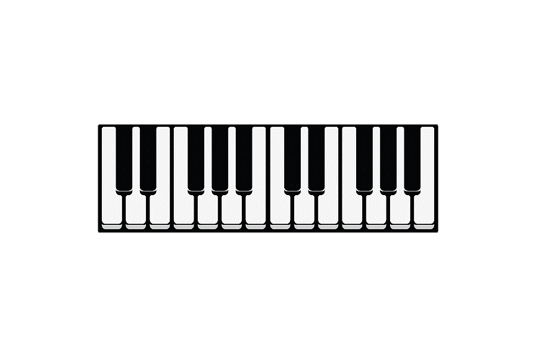
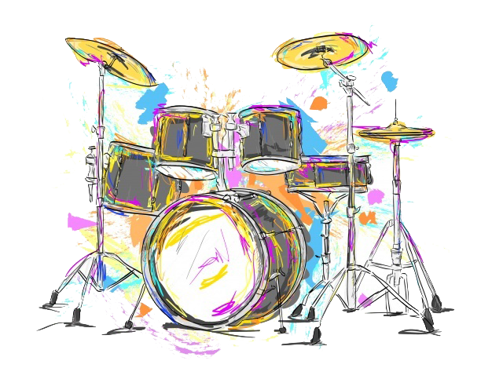
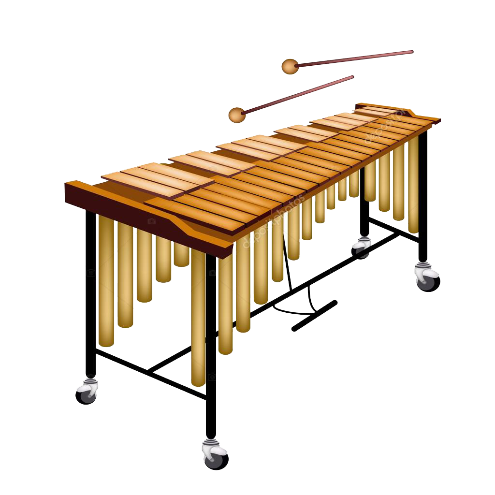

El piano es un instrumento majestuoso, gallardo y portentoso con el cual se pueden crear las más hermosas melodías que han venido acompañando al arte desde eras medievales.

La batería es un instrumento musical que pertenece a la familia de percusión. Este equipo estándar se usa en la música pop, el blues, el jazz, el rock, el heavy metal.

Marimba. Es un instrumento hecho de láminas de madera afinadas, dispuestas en forma de teclado. Es una versión del Xilófono pero tiene mayor extensión de registro (hasta cinco octavas).